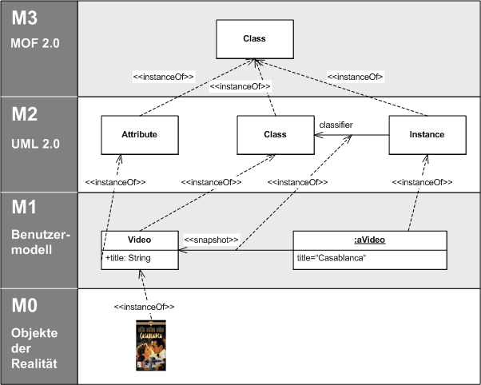
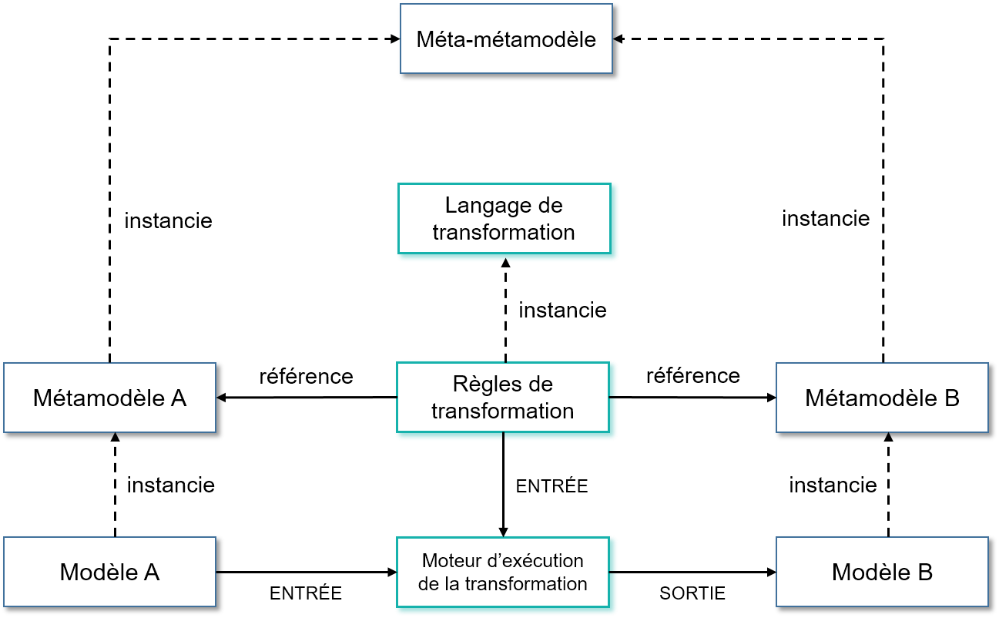
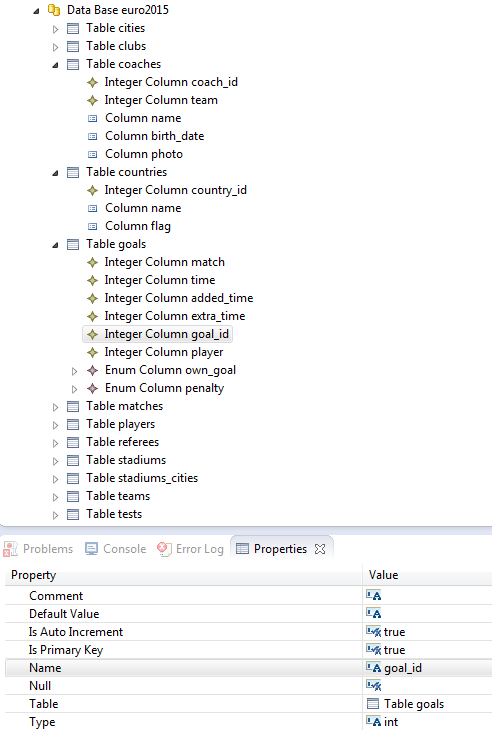
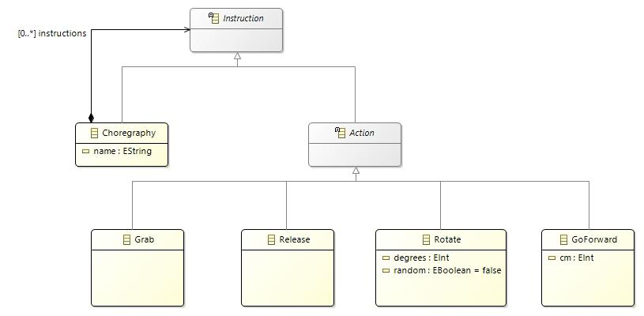
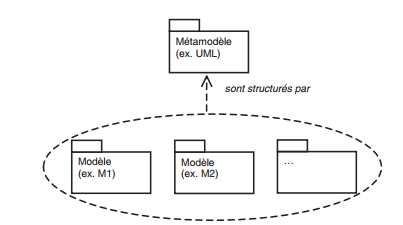
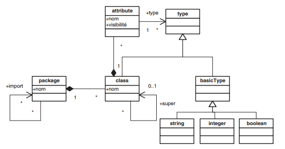
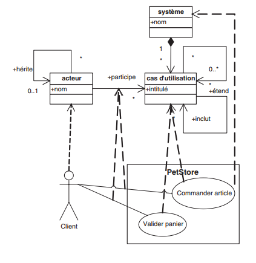
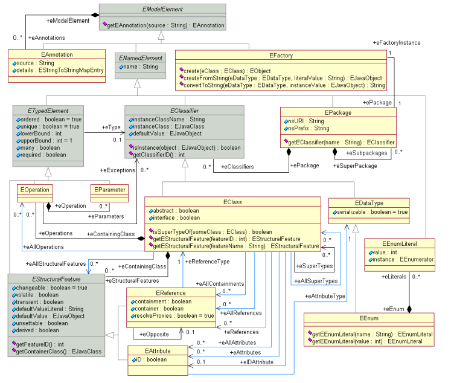
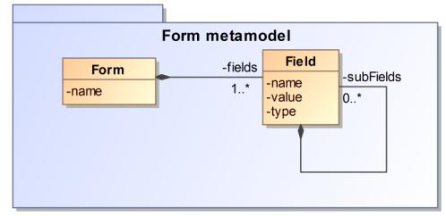

Model-Driven Engineering
Model-Driven Engineering (MDE) puts models at the heart of software development: models are no longer mere documentation, but first-class artifacts that are defined, checked, transformed and executed. These three hands-on labs follow the main steps of building a modeling language with the Eclipse Modeling ecosystem: defining its abstract syntax (metamodel), giving it a textual and a graphical concrete syntax, and manipulating models programmatically.
Key concepts
In MDE, every model conforms to a metamodel, which defines the concepts of a language and the relationships between them. The metamodel itself conforms to a meta-metamodel (MOF in the OMG standards, Ecore in the Eclipse world), which is defined in terms of itself. This four-layer architecture is what makes it possible to build generic tools — editors, validators, code generators — that work for any modeling language.




A modeling language has an abstract syntax (its metamodel) and one or more concrete syntaxes (textual, with Xtext, or graphical, with Sirius). Models can then be manipulated by programs, transformed into other models, or used to generate code. The three labs follow exactly these steps.
- Lab 1 – Metamodeling with Eclipse EMF
- Lab 2 – Graphical modeling workbench with Sirius
- Lab 3 – Manipulating models programmatically
- Further reading
Each lab is followed by solution notes, hidden by default: click on “Solution notes” to display them. Try to solve the lab on your own first.
Lab 1 – Metamodeling with Eclipse EMF
Context
The goal of this lab is to illustrate Model-Driven Engineering techniques. We want to handle relational database models in different technological spaces. First, we build a DSL corresponding to a relational DBMS: it must allow creating SQL models without using a tool such as MySQL or Oracle.
Then, for NoSQL users, a transformation of the SQL model into an XML model is needed in order to use tools such as BaseX. This transformation goes through a pivot model conforming to the KM3 metamodel (proposed by INRIA): a model-to-model (M2M) transformation SQL → KM3, then a transformation KM3 → XML. Finally, for knowledge-base users, an SQL → OWL transformation is needed; the resulting ontology can be used by a tool such as Protégé.
The first exercises aim at getting started with the metamodeling tools of Eclipse Modeling Tools, mainly those of EMF (Eclipse Modeling Framework).
Exercise 1 – Setup
Create an EMF project: File > New > Other > Eclipse Modeling Framework > Empty EMF Project.
Name the project, for example IDM, then Finish. The project appears in the project explorer.
Exercise 2 – Creating the SQL metamodel
Select the model folder of the project, then New > Other > Eclipse Modeling Framework >
Ecore Model, and name the metamodel SQL. Choose the Ecore perspective. When the file
opens, the editor takes the central area; the Properties view, below it, lists and allows editing the
properties of the selected element.
The Ecore file can be filled in two ways:
- with the EMF tree editor (Sample Ecore Model Editor, the default editor or through Open With);
- with the graphical editor: select
SQL.ecore, then New > Ecore Diagram; check that the options Create from an existing model and Initialize the diagram with existing model objects are selected, then Finish.
Exercise 3 – Validating an Ecore model
At any time, you can check that the Ecore file contains a model that conforms to the Ecore metamodel. First save the metamodel, then:
- from the graphical editor: click the Validate button at the end of the toolbar;
- from the tree editor: select the root element and choose Validate in the context menu.
Exercise 4 – Building the metamodel
In the graphical editor, complete the provided SQL.ecore metamodel so that all the concepts
appearing in the model of the figure below are supported.

euro2015 in the tree editor, and properties of a columnExercise 5 – Generating the Java code and the tree editor
Once the metamodel is built, we generate the corresponding Java code and a tree editor for entering a model that conforms to the SQL metamodel.
- Select
SQL.ecore, then New > Other > Eclipse Modeling Framework > EMF Generator Model, Next. Check that the file is namedSQL.genmodel, choose Ecore model, then selectSQL.ecore(Browse Workspace, Load), Next and Finish. - Configure the generation. The
.genmodelholds the generation properties (for instance, whether an attribute can be modified). Here we keep the default configuration. - Generate. On the root of the
.genmodel, choose Generate All. The*.editand*.editorprojects appear.
Exercise 6 – Using the tree editor
- Launch a new Eclipse: right-click on the project, Run As > Run Configurations…, select Eclipse Application, create a new configuration, then Run.
- Create a project (File > New > Project > General > Project), for example
SQLExample. - Launch the editor: New > Other > Example EMF Model Creation Wizards > SQL Model. Keep the
suggested name (
My.sql), choose the root element (Model Object), then Finish. - Enter the model with New Child in the context menu; the Properties view (Ecore perspective) gives access to the properties.
- Validate: Validate checks the selected element and its sub-elements.
- Save the model, close the second Eclipse and go back to the first one.
Exercise 7 – Creating the XML metamodel
Proceeding as for SQL, define a metamodel for XML, then create an XML model that conforms to it.
Exercise 8 – Creating the SQL textual editor
- Create an Xtext project: File > New > Other > Xtext Project From Existing Ecore Models, add
SQL.genmodel, choose the root of the metamodel as Entry rule, then define the language extension and the project name. - Modify the generated grammar to define the concrete syntax.
- Right-click on the grammar, Run As > Generate Xtext Artifacts.
- Repeat the steps of exercise 6 to launch the editor and create a model.
Solution notes – Lab 1
Exercise 4 – SQL metamodel
The model of the figure shows a database, tables, and three kinds of columns (plain column, integer column, enumerated column) whose properties are: comment, default value, auto-increment (integer columns), primary key, name, nullable, table and type. A possible solution:
| EClass | Features |
|---|---|
Database | name : EString [1]; tables : Table [0..*] (containment) |
Table | name : EString [1]; columns : Column [0..*] (containment; opposite: table) |
Column | name : EString [1]; type : EString; comment : EString;
defaultValue : EString; nullable : EBoolean; isPrimaryKey : EBoolean;
table : Table [1] (opposite of columns) |
IntegerColumn → Column | isAutoIncrement : EBoolean |
EnumColumn → Column | values : EString [0..*] (allowed literals) |
Database is the root element: tables and columns are reached through containment. The
Table property displayed for a column is the opposite reference of the columns containment.
Exercise 7 – XML metamodel
| EClass | Features |
|---|---|
Document | root : Element [1] (containment) |
Node (abstract) | – |
Element → Node | name : EString [1]; attributes : Attribute [0..*]
(containment); children : Node [0..*] (containment) |
Attribute | name : EString [1]; value : EString [1] |
Text → Node | value : EString [1] |
The abstract class Node lets an element contain both elements and text, in document order.
Exercise 8 – Xtext grammar
A possible grammar for the metamodel of exercise 4:
grammar ma.ensias.idm.Sql with org.eclipse.xtext.common.Terminals
import "http://ensias.ma/idm/sql" as sql
Database returns sql::Database:
'database' name=ID '{' tables+=Table* '}';
Table returns sql::Table:
'table' name=ID '{' (columns+=Column (',' columns+=Column)*)? '}';
Column returns sql::Column:
IntegerColumn | EnumColumn
| name=ID type=ID (isPrimaryKey?='primary')? (nullable?='null')?;
IntegerColumn returns sql::IntegerColumn:
name=ID 'int' (isAutoIncrement?='auto')? (isPrimaryKey?='primary')? (nullable?='null')?;
EnumColumn returns sql::EnumColumn:
name=ID 'enum' '(' values+=STRING (',' values+=STRING)* ')' (nullable?='null')?;Example: table goals { goal_id int auto primary, own_goal enum ("yes", "no") }.
Lab 2 – Graphical modeling workbench with Sirius
This lab is adapted from the official Eclipse Sirius tutorial (Creating a Domain-Specific Graphical Modeling Workbench with Eclipse Technologies, Obeo – https://eclipse.dev/sirius).
We build a graphical modeling workbench to describe the choreography of a Lego Mindstorms robot.
Sirius concepts used
- Viewpoint Specification Project: Eclipse project that defines a Sirius modeling tool; it contains an
.odesignfile describing the representations and the Java services used. - Viewpoint: set of representations (diagrams, tables, matrices, trees) dedicated to a need.
- Diagram Description: describes a graphical representation: displayed elements, style and editing tools.
- Node: element displayed as an image or a simple shape; it defines how to find the elements to display and their style (shape, label, color).
- Relation Based Edge: edge representing a relation, possibly computed, between two objects.
- User Colors Palette: colors specific to the workbench (background, foreground, border).
- Container: graphical element that contains other elements (free form, list or compartments).
- Double-Click: actions run when an element is double-clicked.
- Direct Edit Label: interpretation of a label edited directly on the diagram.
- Properties Views Description: editing of properties in the Properties view.
Step 1 – The metamodel
Goal: create with Ecore Tools the metamodel of a robot choreography (Ecore file and the corresponding EMF Java code).
- Launch Obeo Designer (or Eclipse with Sirius) and choose the Sirius perspective.
- Create an Ecore Modeling Project named
fr.obeo.dsl.tuto.mindstorms, main packagemindstorms. - Set the package Ns URI to
http://www.obeo.fr/dsl/mindstorms/1.0.0. - Using the palette, create the classes, attributes and references of the figure below.
- Generate the Java code from
mindstorms.genmodel. - Test the metamodel in a new Eclipse: create a Modeling Project, then a
sample.mindstormsmodel with the wizard generated by EMF (Example EMF Model Creation Wizards, Model Object =Choregraphy); create instructions with New Child. - Go back to the first Eclipse to change the icons: import the provided icons into the
.editand.editorprojects (icons/full/obj16/), set the Edit > Creation Icons property of the.genmodeltofalse, then regenerate the Edit code. Relaunch the test Eclipse to see the new icons.

mindstorms metamodelStep 2 – Basic workbench
Goal: create a diagram to display and edit a simple choreography: nodes for the start (the
choreography itself) and for the actions Rotate (left or right), GoForward, Grab and
Release; an edge from the start to the first action; an edge from each action to the next one; tools to
create the actions. All the following actions are done in the test Eclipse, in the .odesign file,
except the creation of the Java services.
- Create a Viewpoint Specification Project
fr.obeo.dsl.tuto.mindstorms.designand import the modeler icons into it. - Create a Viewpoint (Id =
Mindstorms, Model File Extension =mindstorms). - Create a Diagram Description
Choregraphy Diagram(Domain Class =mindstorms.Choregraphy) and reference themindstormsmetamodel in it. The viewpoint can then be enabled on the sample project and an empty diagram created (New representation). - Add a Composite Layout with the Left To Right direction.
- Create the node
CD_Start: Domain Class =mindstorms.Choregraphy, Semantic Candidate Expression =var:self, Workspace Image styleStart.svg, bold labelStart(size 12), no icon, on the border. - Create the node
CD_Actions: Domain Class =mindstorms.Action, Semantic Candidate Expression =aql:self.instructions->filter(mindstorms::Action), Workspace Image styleGrab.svgby default, bold label on the border. - Add Style Customizations to change the image according to the type:
Release: predicateaql:self.oclIsKindOf(mindstorms::Release), propertyworkspacePath=Release.svg;GoForward: imageGoForward.svg, labelaql:self.cm + ' cm';- left rotation: predicate
aql:self.oclIsKindOf(mindstorms::Rotate) and self.degrees >= 0, imageRotate_Left.svg, labelaql:if (self.random) then '?' else self.degrees + '°' endif; - right rotation: same with
self.degrees < 0andRotate_Right.svg.
- Create the edge
CD_Firstfrom the start to the first action: Target Finder Expression =aql:self.instructions->at(1), Manhattan routing, black color. - Create the Java package
fr.obeo.dsl.tuto.mindstorms.design.services, add the metamodel project to the dependencies ofMANIFEST.MF, and write the classChoregraphyServices:
public Instruction getNextInstruction(Instruction instruction) {
Choregraphy parentChoregraphy = (Choregraphy) instruction.eContainer();
List<Instruction> actions = parentChoregraphy.getInstructions();
int position = actions.indexOf(instruction);
if (position == actions.size() - 1) {
return null;
} else {
return actions.get(position + 1);
}
}- Declare the class on the viewpoint through a Java Extension
(
fr.obeo.dsl.tuto.mindstorms.design.services.ChoregraphyServices). - Create the edge
CD_Nextfrom an action to the next one: Target Finder Expression =service:getNextInstruction(). - Create an
Actionspalette section with one Node Creation per action type: Change Context onvar:container, then Create Instance (instructions, typemindstorms.Grab). Do the same forRelease; forGoForward, add a Setcm=50; for the left and right rotations, a Setdegrees=90and-90.
Step 3 – Advanced workbench
Goal: declare specific colors, display choreographies inside a container, and add tools (link, double-click, direct editing of labels).
- At the root of the modeler, create a User Colors Palette with
MindstormColor1(R=186, G=223, B=225) andMindstormColor2(R=0, G=119, B=136). - Create the container
CD_Choregraphy: Domain Class =mindstorms.Choregraphy, Semantic Candidate Expression =feature:instructions, list presentation, gradient style (backgroundMindstormColor1, borderMindstormColor2, bold label). - Inside it, create the sub-node
CD_Instructions(Domain Class =mindstorms.Instruction, Semantic Candidate Expression =feature:instructions), with an icon and a bold label. - Add a customization displaying the name of the choreographies (
feature:name) and extend the labels ofGoForwardandRotateto the elements ofCD_Instructions(Applied On property). - Create a tool section for choreographies: a Container Creation (initial name
NewChoregraphy); addCD_Choregraphyto the Extra Mappings of the action creation tools. - Create a Double-Click on a choreography that opens its detailed diagram (Navigation, Create if not
Existent =
true). - Write the service
editElement(Rotate rotate, String value)inChoregraphyServices, then a Direct Edit Label onCD_Actions,CD_ChoregraphyandCD_Instructions: a Switch with three cases (Rotate:service:editElement(arg0);GoForward: Setcm=var:arg0;Choregraphy: Setname=var:arg0).
Step 4 – Properties views
Goal: customize the Properties view of rotations: the degrees field is disabled
when random is checked; yellow background when the angle is not between −180 and 180; a warning
when the angle is zero without being random.
- At the root of the modeler, create a Properties View Description. Modify the first page: Domain
Class =
mindstorms.Instruction, labelGeneral. - Create a
Propertiesgroup (Domain Class =mindstorms.Rotate) and add it to the page:- a Text
Degrees: valueaql:self.degrees, enabled ifaql:not self.random, operation Set ofvar:newValueintodegrees; - a Checkbox
Random: valueaql:self.random, operation Set ofvar:newValueintorandom; - a conditional style for the
Degreesfield:aql:self.degrees > 180 or self.degrees < -180; - a validation rule of level Warning (“This rotation is useless”) with the audit
aql:self.degrees <> 0 or self.randomand a fix that setsrandomtotrue.
- a Text
Solution notes – Lab 2
Lab 2 is guided step by step; here are the points to check and the Java services.
Step 1
The test model, created with New Child, only accepts Choregraphy, Grab,
Release, Rotate and GoForward inside a Choregraphy: Instruction
and Action are abstract and do not appear in the menu. After changing the icons, the
.genmodel must be regenerated (Edit code) for the new icons to be taken into account.
Step 2
- The diagram of a choreography displays a
Startnode and one node per direct action; a sub-choreography is not anActionand is therefore not displayed byCD_Actions. aql:self.instructions->at(1)denotes the first instruction (indices start at 1); theCD_Firstedge is drawn only if this instruction is an action.getNextInstructionreturnsnullfor the last instruction: no edge is created then.- The creation tools work on
var:container: the action is added to theinstructionslist of the displayed choreography.
Step 3 – editElement service
public Rotate editElement(Rotate rotate, String value) {
String v = value.trim();
if ("?".equals(v)) {
rotate.setRandom(true);
} else {
rotate.setDegrees(Integer.parseInt(v.replace("°", "").trim()));
rotate.setRandom(false);
}
return rotate;
}Step 4
A non-random 0° rotation raises the warning “This rotation is useless”; the fix makes it
random. A 270° rotation is displayed on a yellow background. When random is checked, the
Degrees field is disabled (aql:not self.random).
Lab 3 – Manipulating models programmatically
Metamodel and model
Conformance relation. According to the MOF, a metamodel defines the structure that any model conforming to it must have: every model must respect the structure defined by its metamodel.

Examples of metamodels. The UML metamodel states that UML models contain packages, packages contain classes, classes contain attributes and operations, and so on.

The metamodel of use case diagrams is also a kind of class diagram: each concept is represented by a class and
each relation between concepts by an association. It contains three classes: actor (attribute
name), system (attribute name) and use case (attribute title).
The inherits association has the actor class as source and target; the extends
and includes associations have the use case class as source and target. The figure below
shows the relations between this metamodel and a use case diagram: the dashed arrows are instantiation
relations; a model is said to be an instance of its metamodel.

The Ecore metamodel. EMF uses Ecore as the meta-metamodel to define DSLs and to define itself.
The root element is the EPackage, which contains EClassifiers (EClass,
EDataType, EEnum). An EClass has a name, super-types, attributes
(EAttribute), references (EReference) and operations. An EReference models one end
of an association: it has a name and a type (the target EClass). A bidirectional association is modeled
by two references linked by eOpposite; a composition, by a reference whose containment property
is true. The multiplicity of a reference or an attribute is given by lowerBound and
upperBound.

Creating a metamodel and a model with EMF
Steps for the metamodel
- Create an empty EMF project (File > New > Other > Eclipse Modeling Framework > Empty EMF Project).
- Create a folder for the metamodel and the models.
- Create in it an Ecore metamodel (New > Other > Eclipse Modeling Framework > Ecore Model) named
form.ecore. - Open it with the Sample Ecore Model Editor (tree editor).
- Fill in the package: Name (package name), Ns Prefix (same value as the name) and Ns URI (absolute identifier of the metamodel).
- Add the elements one by one with New Child, setting for each feature the multiplicities
(
lowerBound,upperBound), the type (EType), the composition (Containment) and, for a bidirectional relation, the opposite (EOpposite).
Example. The metamodel of user-interface forms states that a form (Form) is made of
fields (Field), themselves made of sub-fields.

Note. Compositions are essential in an Ecore metamodel: an element linked to another one by a
composition can be created directly inside an instance of that other element in the model editor. To build
a complete model, every metamodel must therefore have a root element from which all the other
elements can be reached, directly or transitively, through compositions. Here, Form plays this role.
Steps for the model
- Register the metamodel with EMF: right-click on
form.ecore, Register EPackages. - File > New > Other…, then EMF Model (Epsilon).
- Name the model, choose the metamodel URI, then the root element.
- Add the content by right-clicking on the root, New Child.
Manipulating models in Java
Goal. Write a Java program able to modify any EMF model: add elements, modify their
attributes and references, delete elements, then save the result. The program receives the metamodel
(.ecore) and the model to modify (a conforming XMI file). It must work, without changing its
code, on the form metamodel as well as on the graph metamodel seen in class or on any other metamodel.
Elements of the EMF API
| Method | Role |
|---|---|
Interface EObject (any model element) | |
eClass() | the metaclass (EClass) of the element |
eGet(feature) | reads an attribute or a reference; for a multi-valued feature, returns a modifiable list |
eSet(feature, value) | sets a single-valued feature |
eUnset(feature) | resets the feature to its default value (empty for a list) |
eIsSet(feature) | does the feature have a value different from its default value? |
eContainer() / eContents() | the container / the directly contained elements |
eResource() | the resource containing the element, or null |
Interfaces EPackage, EClass, EStructuralFeature, EAttribute, EReference (the metamodel) | |
EPackage.getEClassifier(name) | looks up a metaclass, a data type or an enumeration |
EPackage.getESubpackages() / getNsURI() | sub-packages / nsURI |
EClass.getEStructuralFeature(name) | the attribute or reference with this name (inherited ones included), or null |
EClass.getEAllAttributes() / getEAllReferences() | all attributes / references, inherited ones included |
EClass.isAbstract() | an abstract metaclass cannot be instantiated |
EClass.isSuperTypeOf(c) / isInstance(obj) | type compatibility tests |
EStructuralFeature.isMany() / getUpperBound() | multi-valued feature? / upper bound (-1 for *) |
EStructuralFeature.isChangeable() / isDerived() | modifiable feature? / derived? |
EAttribute.getEAttributeType() | type of the attribute (EString, EInt, enumeration…) |
EReference.isContainment() / getEReferenceType() | composition? / target metaclass |
Utility class EcoreUtil | |
create(eClass) | creates an instance of the metaclass |
createFromString(type, text) / convertToString(type, value) | conversions text ↔ attribute value |
delete(obj, recursive) | deletes an element from the model (see the javadoc for recursive) |
Interfaces ResourceSet and Resource | |
ResourceSet.getResource(uri, true) / createResource(uri) | loads a file / creates an empty resource |
ResourceSet.getResourceFactoryRegistry() | maps an extension to a factory (EcoreResourceFactoryImpl, XMIResourceFactoryImpl) |
ResourceSet.getPackageRegistry() | maps an nsURI to an EPackage |
Resource.getContents() / getAllContents() | root elements / all elements, direct and indirect |
Resource.save(options) | saves the resource (see the XMLResource options) |
Project setup
- Create a Java project (or a Plug-in project).
- Add to the build path the libraries
org.eclipse.emf.common_*.jar,org.eclipse.emf.ecore_*.jarandorg.eclipse.emf.ecore.xmi_*.jarfrom the Eclipsepluginsfolder (for a Plug-in project, addorg.eclipse.emf.ecoreandorg.eclipse.emf.ecore.xmito the dependencies ofMANIFEST.MF). - Copy the metamodel and the model into the project, for example into
model/form/.
Work to do: the ModelManager class
All the operations are grouped in a ModelManager class. None of its methods may contain a name
specific to a metamodel (Form, Field, name, Vertex…): these names
are always received as parameters. Any error (unknown metaclass, missing feature, incompatible type…) throws
an IllegalArgumentException with an explicit message.
public class ModelManager {
private final ResourceSet resourceSet = new ResourceSetImpl();
private EPackage metamodel;
private Resource model;
/** Maps the "ecore" extension to metamodels and all the other ones to XMI models. */
public ModelManager()
// ... the methods of questions 1 to 6
}Question 1 – Loading
/** Loads the metamodel, registers it (with its sub-packages) in the ResourceSet and returns it. */
public EPackage loadMetamodel(String path)
/** Loads an existing model conforming to the already loaded metamodel. */
public Resource loadModel(String path)
/** Creates an empty model whose root is an instance of rootClassName; returns this root. */
public EObject createModel(String path, String rootClassName)
/** Returns the root element of the model. */
public EObject getRoot()Question 2 – Searching
/** The metaclass with this name (sub-packages included), or null. */
public EClass getEClassByName(String name)
/** All the instances of className in the model, sub-classes included. */
public List<EObject> findAll(String className)
/** The first instance of className whose attribute attrName equals value (compared as text), or null. */
public EObject findByAttribute(String className, String attrName, String value)getEClassByName only returns an EClass (a data type or an enumeration may have the same
name); findByAttribute works whatever the type of the attribute.
Question 3 – Adding
/** Creates an instance of the metaclass className (which must be concrete). */
public EObject createInstance(String className)
/** Creates an instance of className, stores it in the containment refName of parent and returns it. */
public EObject addElement(EObject parent, String refName, String className)addElement checks, using the metamodel, that refName is a containment of parent,
that className is compatible with the type of the reference and that the upper bound is not exceeded;
it works for single-valued as well as multi-valued references.
Question 4 – Modifying
/** Sets the attribute attrName of obj (value is converted to the declared type);
for a multi-valued attribute, the value is added. */
public void setAttribute(EObject obj, String attrName, String value)
/** Links source to the existing element target through the reference refName (not a containment);
for a multi-valued reference, target is added. */
public void setReference(EObject source, String refName, EObject target)
/** Removes value from the multi-valued feature featureName of obj. */
public void removeValue(EObject obj, String featureName, Object value)
/** Resets the feature featureName of obj to its default value. */
public void unset(EObject obj, String featureName)Question 5 – Deleting
/** Deletes obj and everything it contains; afterwards, no element references obj anymore. */
public void deleteElement(EObject obj)
/** Deletes all the instances of className and returns the number of deleted elements. */
public int deleteAll(String className)Question 6 – Saving and printing
/** Saves the model into its file, in UTF-8, with a link to the .ecore (xsi:schemaLocation). */
public void save() throws IOException
/** Saves the model into another file. */
public void saveAs(String path) throws IOException
/** Prints the model tree: one line per element (metaclass and set attributes),
indented according to its depth. */
public void print()Check that the saved model opens in the Eclipse reflective editor (Open With > Sample Reflective Ecore Model Editor).
Tests. With the following initial model:
<form:Form xmi:version="2.0" xmlns:xmi="http://www.omg.org/XMI"
xmlns:form="http://poc.hms.form" name="ED EER Model">
<fields name="id Patient">
<fields name="first Name" type="text"/>
<fields name="sexe" type="text"/>
</fields>
<fields name="id Doctor"/>
<fields name="signature" type="text"/>
</form:Form>the test program
public class Main {
public static void main(String[] args) throws IOException {
ModelManager mm = new ModelManager();
mm.loadMetamodel("model/form/form.ecore");
mm.loadModel("model/form/form.model");
EObject form = mm.getRoot();
EObject email = mm.addElement(form, "fields", "Field");
mm.setAttribute(email, "name", "email");
mm.setAttribute(email, "type", "text");
EObject idPatient = mm.findByAttribute("Field", "name", "id Patient");
EObject nationality = mm.addElement(idPatient, "fields", "Field");
mm.setAttribute(nationality, "name", "nationality");
EObject sexe = mm.findByAttribute("Field", "name", "sexe");
mm.setAttribute(sexe, "type", "radio");
mm.deleteElement(mm.findByAttribute("Field", "name", "signature"));
mm.print();
mm.saveAs("model/form/form-modified.model");
}
}must print:
Form name=ED EER Model
Field name=id Patient
Field name=first Name type=text
Field name=sexe type=radio
Field name=nationality
Field name=id Doctor
Field name=email type=textWithout modifying ModelManager, then use it on another metamodel and test all the operations.
Interactive program. Write a ModelEditor class that uses ModelManager
to provide a console model editor (with Scanner):
- the user enters the path of the metamodel and that of the model (or chooses to create a new model);
- a menu offers: print the model, add an element, modify an attribute, link two elements, delete an element, save, quit;
- errors are displayed without stopping the program.
Bonus. When the user selects an element, display its attributes and references with their
type and multiplicity. Before saving, check the metamodel constraints (lower bounds…) with
Diagnostician.INSTANCE.validate(root) and display the errors.
Solution notes – Lab 3
Here is an implementation of the ModelManager class.
Constructor and question 1
public ModelManager() {
Map<String, Object> m = resourceSet.getResourceFactoryRegistry().getExtensionToFactoryMap();
m.put("ecore", new EcoreResourceFactoryImpl());
m.put(Resource.Factory.Registry.DEFAULT_EXTENSION, new XMIResourceFactoryImpl());
}
public EPackage loadMetamodel(String path) {
Resource r = resourceSet.getResource(URI.createFileURI(path), true);
if (r.getContents().isEmpty() || !(r.getContents().get(0) instanceof EPackage))
throw new IllegalArgumentException("No metamodel in " + path);
metamodel = (EPackage) r.getContents().get(0);
register(metamodel);
return metamodel;
}
private void register(EPackage p) {
resourceSet.getPackageRegistry().put(p.getNsURI(), p);
for (EPackage sub : p.getESubpackages()) register(sub);
}
public Resource loadModel(String path) {
model = resourceSet.getResource(URI.createFileURI(path), true);
return model;
}
public EObject createModel(String path, String rootClassName) {
model = resourceSet.createResource(URI.createFileURI(path));
EObject root = createInstance(rootClassName);
model.getContents().add(root);
return root;
}
public EObject getRoot() {
if (model == null || model.getContents().isEmpty())
throw new IllegalArgumentException("No model loaded");
return model.getContents().get(0);
}Registering the nsURI in the registry of the ResourceSet lets the XMI loader find the
package designated by xmlns:form.
Question 2
public EClass getEClassByName(String name) {
return find(metamodel, name);
}
private EClass find(EPackage p, String name) {
EClassifier c = p.getEClassifier(name);
if (c instanceof EClass) return (EClass) c; // neither EDataType nor EEnum
for (EPackage sub : p.getESubpackages()) {
EClass r = find(sub, name);
if (r != null) return r;
}
return null;
}
public List<EObject> findAll(String className) {
EClass c = getEClassByName(className);
if (c == null) throw new IllegalArgumentException("Unknown metaclass: " + className);
List<EObject> res = new ArrayList<>();
for (Iterator<EObject> it = model.getAllContents(); it.hasNext(); ) {
EObject o = it.next();
if (c.isInstance(o)) res.add(o); // sub-classes included
}
return res;
}
public EObject findByAttribute(String className, String attrName, String value) {
for (EObject o : findAll(className)) {
EStructuralFeature f = o.eClass().getEStructuralFeature(attrName);
if (!(f instanceof EAttribute))
throw new IllegalArgumentException("Unknown attribute: " + attrName);
Object v = o.eGet(f);
if (v != null && value.equals(
EcoreUtil.convertToString(((EAttribute) f).getEAttributeType(), v)))
return o;
}
return null;
}isInstance accepts instances of sub-classes; convertToString produces the text of a value
whatever its type (EInt, enumeration…).
Question 3
public EObject createInstance(String className) {
EClass c = getEClassByName(className);
if (c == null) throw new IllegalArgumentException("Unknown metaclass: " + className);
if (c.isAbstract() || c.isInterface())
throw new IllegalArgumentException(className + " is abstract");
return EcoreUtil.create(c);
}
@SuppressWarnings("unchecked")
public EObject addElement(EObject parent, String refName, String className) {
EStructuralFeature f = parent.eClass().getEStructuralFeature(refName);
if (!(f instanceof EReference) || !((EReference) f).isContainment())
throw new IllegalArgumentException(refName + " is not a containment of "
+ parent.eClass().getName());
EReference ref = (EReference) f;
EObject child = createInstance(className);
if (!ref.getEReferenceType().isInstance(child))
throw new IllegalArgumentException(className + " is incompatible with "
+ ref.getEReferenceType().getName());
if (ref.isMany()) {
List<EObject> l = (List<EObject>) parent.eGet(ref);
if (ref.getUpperBound() != ETypedElement.UNBOUNDED_MULTIPLICITY
&& l.size() >= ref.getUpperBound())
throw new IllegalArgumentException("Upper bound reached: " + refName);
l.add(child);
} else {
if (parent.eIsSet(ref))
throw new IllegalArgumentException(refName + " is already set");
parent.eSet(ref, child);
}
return child;
}Question 4
private EStructuralFeature feature(EObject obj, String name) {
EStructuralFeature f = obj.eClass().getEStructuralFeature(name);
if (f == null)
throw new IllegalArgumentException("Unknown feature: " + obj.eClass().getName() + "." + name);
return f;
}
@SuppressWarnings("unchecked")
public void setAttribute(EObject obj, String attrName, String value) {
EStructuralFeature f = feature(obj, attrName);
if (!(f instanceof EAttribute) || !f.isChangeable())
throw new IllegalArgumentException(attrName + " is not a modifiable attribute");
EAttribute a = (EAttribute) f;
Object v;
try {
v = EcoreUtil.createFromString(a.getEAttributeType(), value);
} catch (RuntimeException e) {
throw new IllegalArgumentException("Invalid value '" + value + "' for " + attrName, e);
}
if (a.isMany()) ((List<Object>) obj.eGet(a)).add(v);
else obj.eSet(a, v);
}
@SuppressWarnings("unchecked")
public void setReference(EObject source, String refName, EObject target) {
EStructuralFeature f = feature(source, refName);
if (!(f instanceof EReference) || ((EReference) f).isContainment())
throw new IllegalArgumentException(refName + " is not a non-containment reference");
EReference r = (EReference) f;
if (!r.getEReferenceType().isInstance(target))
throw new IllegalArgumentException(target.eClass().getName() + " incompatible with " + refName);
if (r.isMany()) ((List<EObject>) source.eGet(r)).add(target);
else source.eSet(r, target);
}
public void removeValue(EObject obj, String featureName, Object value) {
EStructuralFeature f = feature(obj, featureName);
if (!f.isMany())
throw new IllegalArgumentException(featureName + " is not multi-valued");
((List<?>) obj.eGet(f)).remove(value);
}
public void unset(EObject obj, String featureName) {
obj.eUnset(feature(obj, featureName));
}Question 5
public void deleteElement(EObject obj) {
EcoreUtil.delete(obj, true); // also removes the references to obj and its content
}
public int deleteAll(String className) {
List<EObject> all = findAll(className);
for (EObject o : all)
if (o.eResource() != null) // already deleted with its container?
EcoreUtil.delete(o, true);
return all.size();
}Question 6
public void save() throws IOException {
Map<String, Object> options = new HashMap<>();
options.put(XMLResource.OPTION_ENCODING, "UTF-8");
options.put(XMLResource.OPTION_SCHEMA_LOCATION, Boolean.TRUE);
model.save(options);
}
public void saveAs(String path) throws IOException {
model.setURI(URI.createFileURI(path));
save();
}
public void print() {
for (EObject root : model.getContents()) print(root, 0);
}
private void print(EObject o, int depth) {
StringBuilder sb = new StringBuilder(" ".repeat(depth)).append(o.eClass().getName());
for (EAttribute a : o.eClass().getEAllAttributes())
if (o.eIsSet(a)) sb.append(' ').append(a.getName()).append('=').append(o.eGet(a));
System.out.println(sb);
for (EObject child : o.eContents()) print(child, depth + 1);
}Interactive program (excerpt)
while (true) {
System.out.println("1 Print 2 Add 3 Modify 4 Link 5 Delete 6 Save 0 Quit");
String choice = sc.nextLine().trim();
try {
switch (choice) {
case "1" -> mm.print();
case "2" -> {
EObject parent = select(sc, mm);
System.out.print("Containment: "); String ref = sc.nextLine();
System.out.print("Metaclass: "); String cls = sc.nextLine();
mm.addElement(parent, ref, cls);
}
// 3, 4 and 5 on the same principle
case "6" -> {
Diagnostic d = Diagnostician.INSTANCE.validate(mm.getRoot());
d.getChildren().forEach(c -> System.out.println(c.getMessage()));
mm.save();
}
case "0" -> { return; }
default -> System.out.println("Unknown choice");
}
} catch (IllegalArgumentException e) {
System.out.println("Error: " + e.getMessage()); // the program goes on
}
}The select method can, for instance, designate an element by its metaclass and the value of an
attribute (findByAttribute), then display its features (getEAllAttributes(),
getEAllReferences(), type and bounds) for the bonus.
Further reading
- Marco Brambilla, Jordi Cabot and Manuel Wimmer, Model-Driven Software Engineering in Practice, 2nd ed., Morgan & Claypool, 2017.
- Dave Steinberg, Frank Budinsky, Marcelo Paternostro and Ed Merks, EMF: Eclipse Modeling Framework, 2nd ed., Addison-Wesley, 2008.
- Lorenzo Bettini, Implementing Domain-Specific Languages with Xtext and Xtend, 2nd ed., Packt, 2016.
- Object Management Group, Meta Object Facility (MOF) specification.
- Eclipse Sirius, official documentation and tutorials.